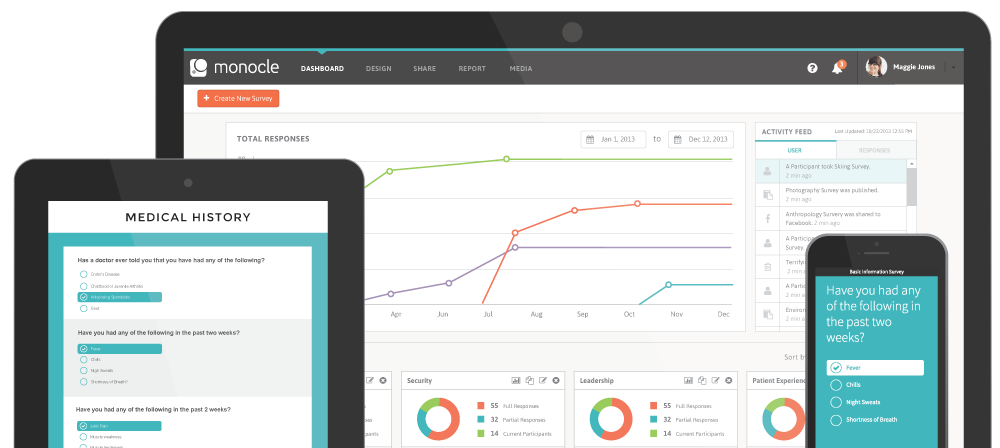

Monocle
Survey Creation Platform


Monocle is a survey creation platform, similar to Survey Monkey. Users can create surveys based off of question types, share using preferred social networks and services, and view collection results in the app. Monocle was meant to replace DatStat's older data collection software, Illume. However, when Monocle was in open beta the company decided to take a different direction, and unfortunately the product was never fully released. Many features for a second iteration of the product were already designed and in development, such as the ability to apply logic workflows and the ability to pipe values from answers into later questions.
When I first started working for DatStat, Monocle was in the middle of the wireframing stage for it's core features. I began fleshing out the rest of the wireframe details, and creating themes users could choose from for their surveys. One of the more important features that was not supported in DatStat's older survey product was responsive survey design. As a fresh college graduate, this project gave me the first hands on learning experience of handling responsive design with a large variety of content types.
When the themes were done and handed off to engineering, I turned to the look and feel of the web app itself. We decided on flat ui, using a teal blue as the main brand color, with orange for call to action areas of the app. After the name Monocle was chosen for the product, I began the process of developing a logo. The intent was to design something that conveyed a monocle, and was simple enough to be used in a range of sizes (favicon, app icon, etc). The name Monocle was chosen because when taking a survey, there is a focused objective and the results let you get a detailed look at what you are researching.
As the app was being programmed, I got to learn the ropes of QA and how to handle bridging the gap between the design vision of the product and oversights on either me or the developers in that regard. While QA was going on I also designed a marketing website for developers to implement for the beta launch. The site featured a signup workflow so people interested could receive emails about news related to Monocle, and a product features page to give a high level overview of the products purpose.
The company decided to abandon the product a few months into the beta release while I was in the middle of designing it's next set of features. I speculate a few reasons for this from both a marketing and programming perspective. Monocle's target audience was extremely broad, and with the company starting to explore markets in healthcare and medical research, I don't think the product hit the right pain points for that market. On the engineering side, there may have been issues with getting Monocle to integrate with DatStat's data management platform, which was built several years ago, when the programming landscape was a lot different.